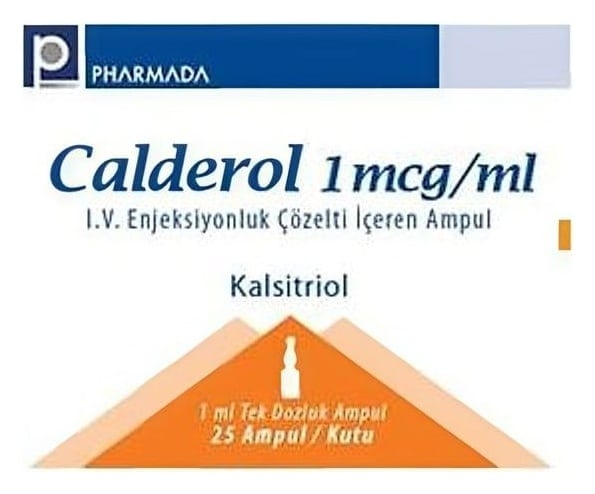

Calderol 1 mcg/ml IV Enjeksiyonluk Çözelti İçeren Ampul ,2AMPUL, 5 Adet

Ne için kullanılır
KT · Bölüm 1• CALDEROL 1 mcg/ml, IV enjeksiyonluk çözelti içeren ampul; 1 mcg kalsitriol içeren 1 ml'lik ampullerde sunulmaktadır. Bir kutuda 25 ampul bulunur.
• Kalsitriol, vitamin D
’ün aktif formudur.
• CALDEROL sadece damar içine enjeksiyon şeklinde uygulanmalıdır.
• CALDEROL, kronik (uzun dönemli) böbrek bozukluğu için diyalize giren hastalarda hipokalsemi (kanda düşük kalsiyum seviyesi) tedavisi için kullanılır. Ayrıca kemik problemlerine neden olabilen kandaki yüksek paratiroid hormon (PTH) seviyelerini de azaltabilir. Sağlıklı kişilerde kalsitriol doğal olarak böbrekler yoluyla üretilir. Fakat böbrek bozukluğunda çoğu kez, doğal olarak üretilen kalsitriol eksikliği bulunmaktadır. Bu durum da kanda düşük kalsiyum seviyelerine ve yüksek PTH seviyelerine neden olabilmektedir. Kalsitriol vücudun doğal kalsitriolünün yerine geçmek için kullanılır. Kalsitriol kandaki kalsiyum seviyelerini arttırır ve PTH seviyelerini düşürür.